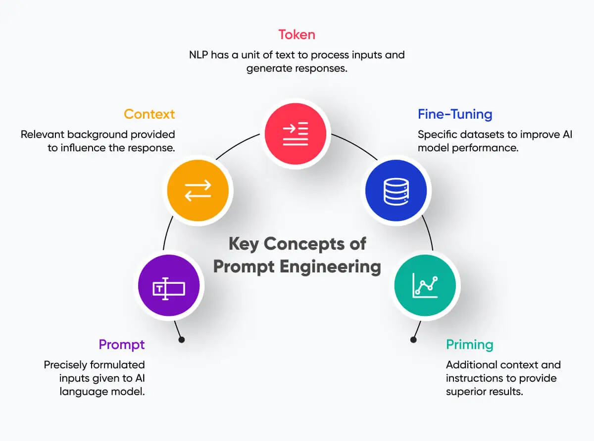
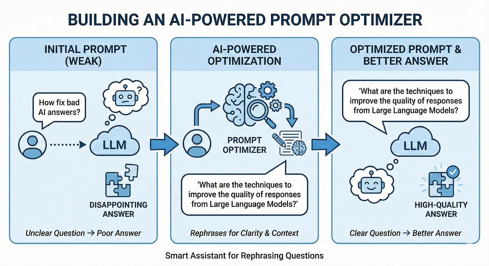

Prompt engineering is the art of designing clear and effective prompts to interact with AI systems. By learning how to structure prompts properly, users can guide artificial intelligence models to generate more accurate, relevant, and meaningful responses.
Modern AI tools like ChatGPT, Claude, Gemini and Midjourney rely heavily on prompt quality. A well-designed prompt can dramatically improve the quality of AI outputs in tasks such as coding, writing, research, content generation, and problem solving.
Start LearningPrompt engineering refers to the process of creating structured instructions that guide artificial intelligence systems to generate the desired output. It involves selecting the right words, providing context, defining constraints, and specifying the format of the output.
As AI systems become more powerful, the ability to communicate effectively with these systems becomes an important skill. Prompt engineering helps users control AI behaviour and obtain better results for complex tasks such as data analysis, creative writing, programming, and research.

Learn different prompt types such as Zero-shot, Few-shot, Chain-of-thought and instruction-based techniques.
Learn More
Compare weak prompts and strong prompts to understand how prompt design impacts AI responses and improves output quality.
View ExamplesExplore popular AI tools such as ChatGPT, Google Gemini, Claude AI and Midjourney that use advanced prompt engineering techniques.
Explore ToolsWell-structured prompts help AI systems understand the task clearly and generate more accurate and useful responses.
Using optimized prompts allows professionals to complete tasks faster such as coding, research, documentation and data analysis.
Prompt engineering enables creative applications including content writing, image generation, storytelling, design and automated workflows.